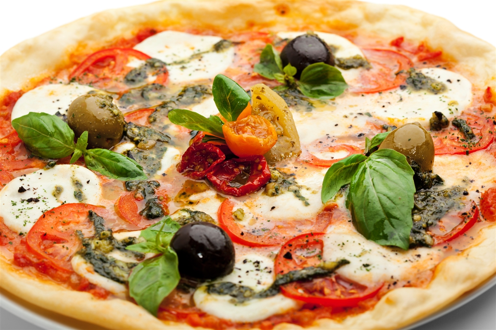

Esta es una de las recetas más famosas y tradicionales pero, ¿quién inventó la pizza margarita?
Según cuenta la leyenda, en el año 1889 (ya hacia finales del siglo XIX) los reyes de Italia visitaron la ciudad y Esposito fue llamado para que confeccionara una pizza a los ilustres visitantes Umberto I y la reina Margherita Teresa de Saboya.
La pizza “margarita” fue elaborada simulando los colores de la bandera de Italia:
El rojo por los tomates frescos
El blanco por el queso mozzarella
El verde por la albahaca
La aceptación fue tal, que actualmente este plato se conoce el nombre de la reina Magherita.
En aquel momento se dice que el tomate era considerado venenoso. Más adelante se convirtió en uno de los ingredientes principales de estos deliciosos panes planos.
Se dice que había llegado a Italia desde América en las embarcaciones de los españoles provenientes de algunas regiones de este continente, concretamente de lo que es hoy Perú. Cuando se consumió el fruto rojo comenzó a utilizarse de manera obligatoria en estas elaboraciones.
En un principio los componentes de este popular plato no eran tan variados como en la actualidad.
Pero sí se sabe que la pizza en su forma más esencial requiere de los ingredientes básicos para mantener su composición originaria: la masa elaborada horneada, recubierta con salsa de tomate y queso, dejaría de ser la popular pizza sin estos ingredientes.
Ingredientes
Agua 120cc
Albahaca fresca 5grs
Harina 0000 200grs
Ajo 2 dientes
Sal 5grs
Levadura 5grs
Tomates frescos 150grs
Aceitunas 30grs
Mozzarella 200grs
PREPARACIÓN
Coloque la harina en un bowl, agregue levadura y mezcle, luego incorpore agua y sal, mezcle hasta formar la masa.
Retire la masa del bowl y amase sobre la mesada enharinada hasta formar un bollo. Envuelva el bollo en papel film y deje levar durante 1 hora, transcurrido el tiempo de reposo amase nuevamente con las manos dando forma circular, luego coloque sobre una placa y deje levar nuevamente. Cocine en horno precalentado a 180°C durante 10 minutos.
Corte el diente de ajo en brunoise.
Corte la albahaca en chiffonade.
Cubra la masa con mozzarella, luego rodajas de tomate y ajo picado, termine la cocción en horno a 180°C durante 15 minutos.
Al momento de servir incorpore la albahaca y las aceitunas.